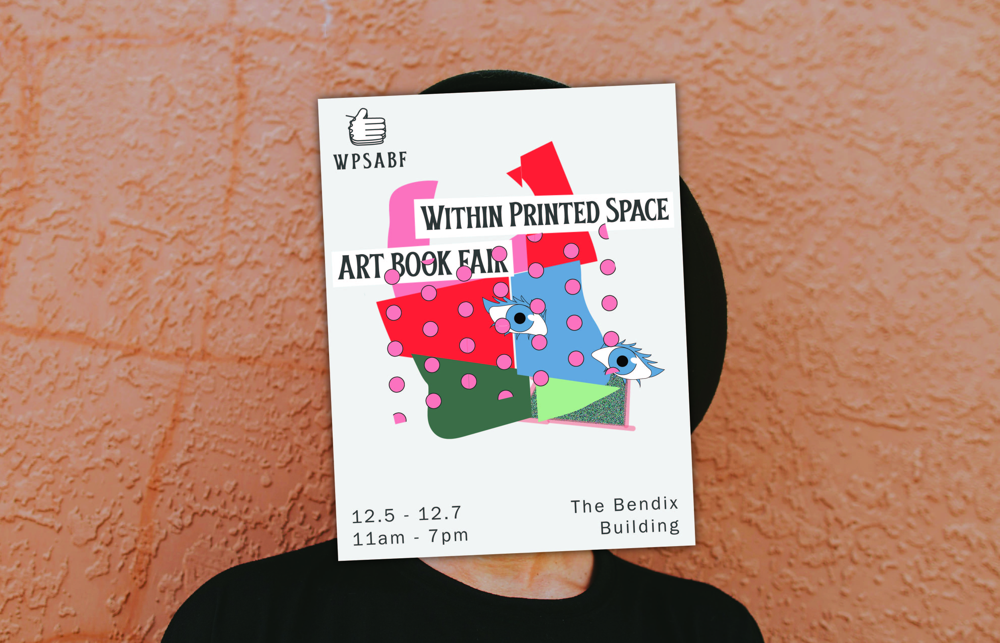
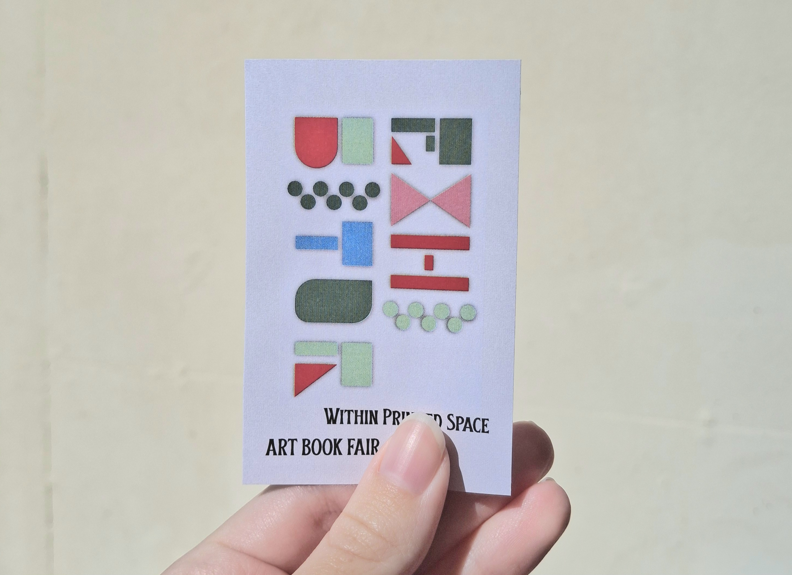
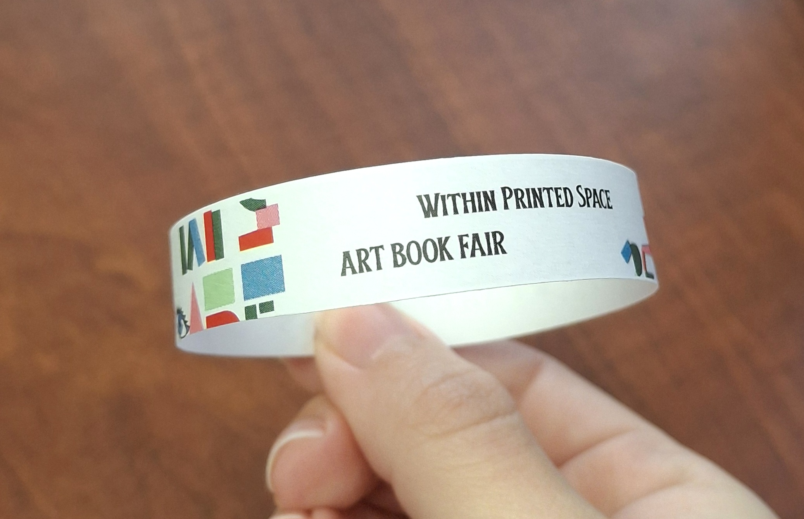
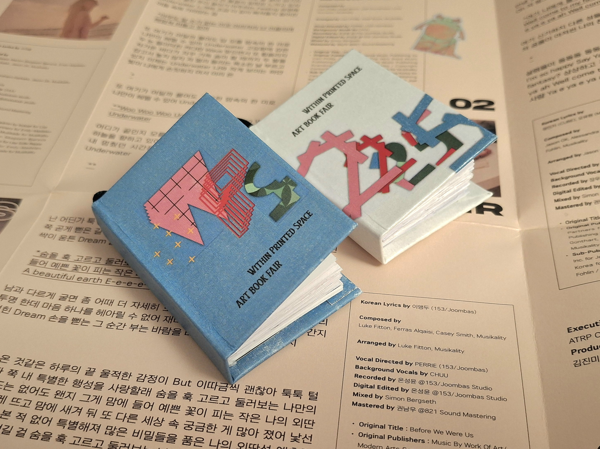
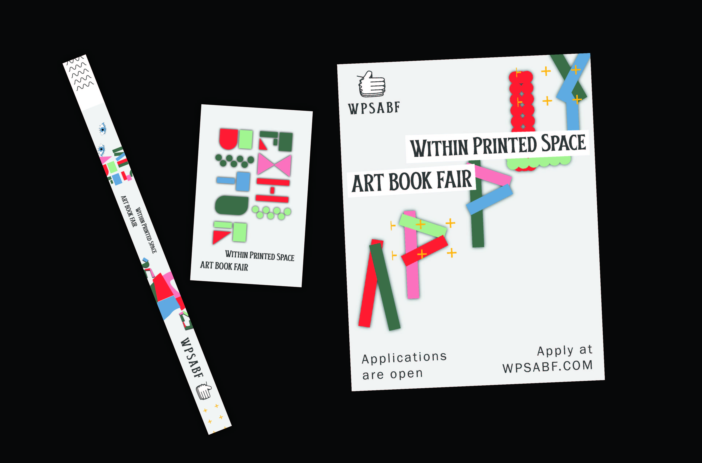
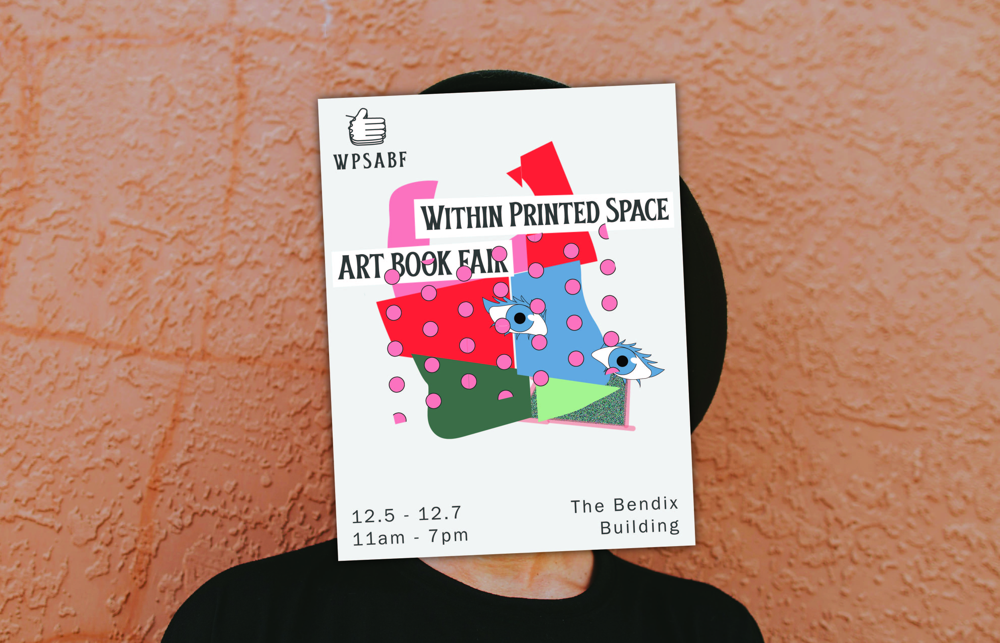
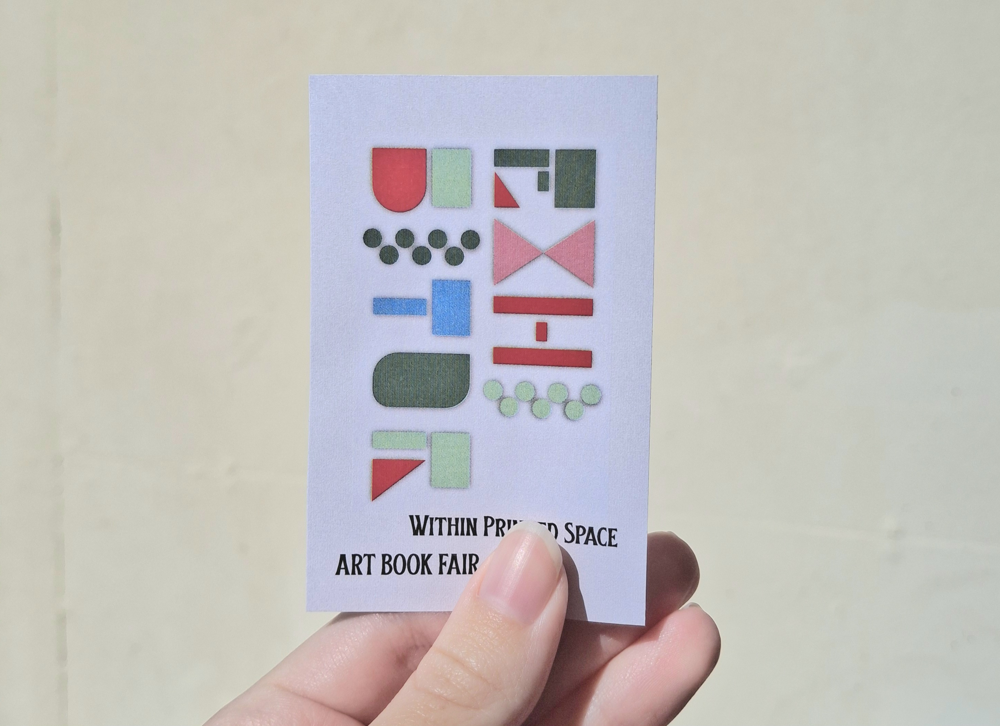
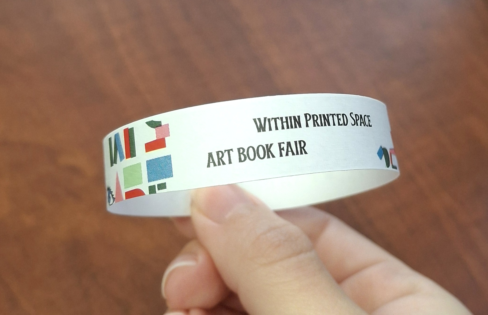
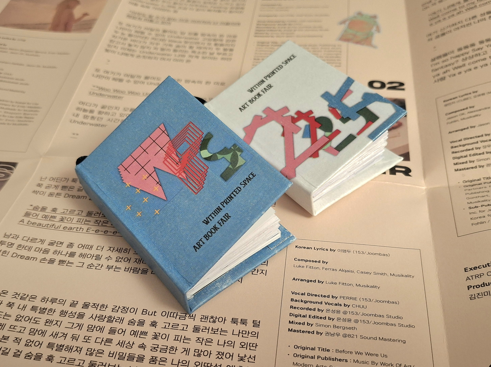
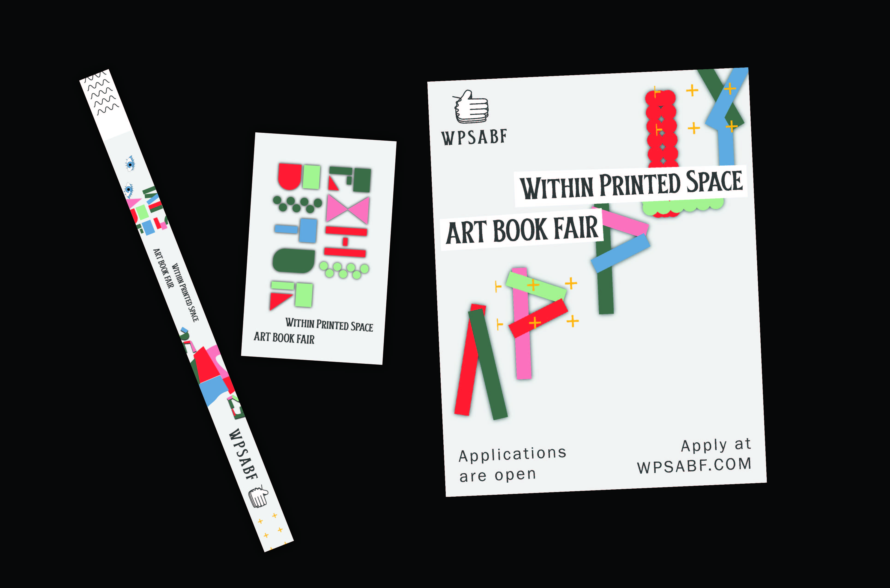

I create innovative designs and love solving creative problems. I’m basically a chef who cooks up ideas and serves them as clean, polished visuals. I take feedback like seasoning and use it to make every project better. I’m always ready for the next challenge.


Moodjis is my thesis project which explores how emojis can function as visual tools to promote mental health awareness and support emotional well-being in digital communication. By narrowing the focus to emoji design, this study examines how small, expressive icons can visually represent stress, self-care, emotional support, and healthy coping strategies in chat-based platforms. The project aims to create a custom series of emojis/stickers that support emotional literacy and reduce the stigma around mental health through approachable, culturally relevant symbols. Additionally, I developed a website for users to express their emotions using Moodjis on their own photos. Everything from the website was designed by me including the buttons, layout, and user experience. This project was exhibited at DORCAM. Many users were interacting with the website and brought home their very own decorated photos. I received many praises.


WITHIN PRINTED SPACE is an event for people who love self publishing books, and art. Visitors have a chance to see produced, printed, books, handmade zines, booklets, and more from the maker. I created a campaign for this conceptual Art Book Fair and apply its brand identity throughout assets. WPS branding was inspired by collages. The color palette was based on a magazine I was cutting for another project. The magazine mostly had greens. I created some of the assets such as the posters, exhibitor pass, and wristband. Rather than using a psd mockup, I printed and photographed the materials.
 









I designed a recipe page featuring illustrations to depict ingredients. Since the recipe is based on illustrations, I decided to use a fun layout. This resulted in an easy yet fun to cook arrangement. I ensure that the numbered steps are next to the instructions to avoid confusion. The color choices were based on the dish. Kimchi Sausage Fried Rice is a Korean dish.